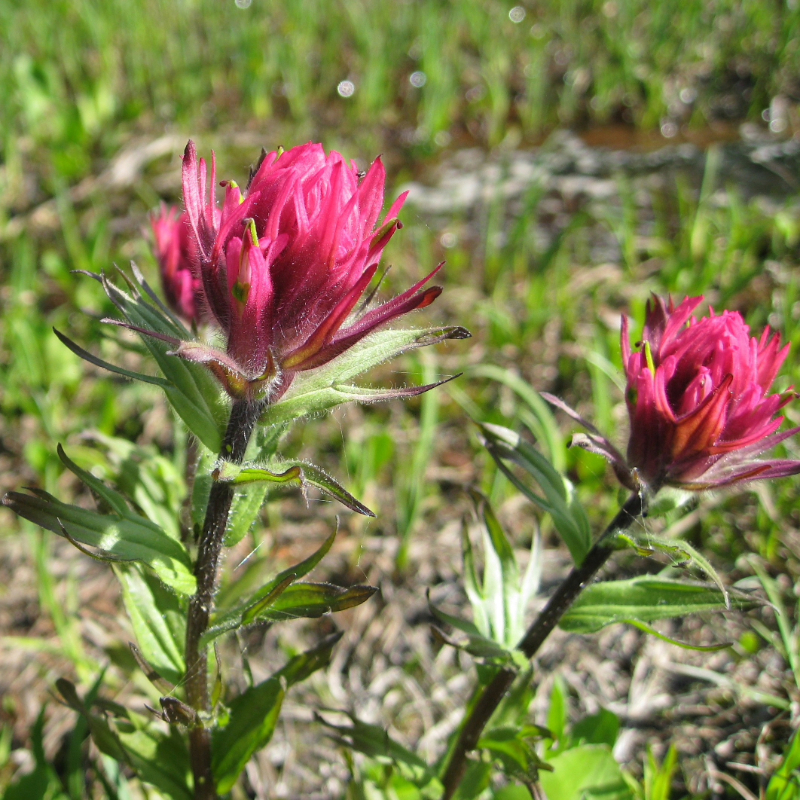
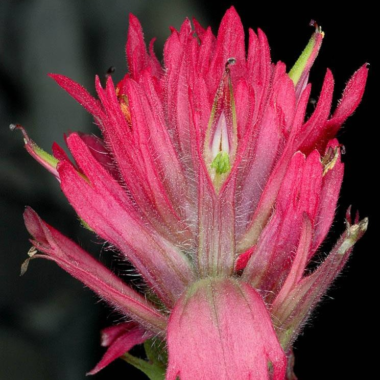

Castilleja parviflora
- Common names
- Mountain Paintbrush
Rosy Paintbrush
- Family
- Orobanchaceae
- Family common name
- Broomrape Family
- Blooms
- June - September
- Habitat
- Alpine meadows, often with heathers, at mid- to high-elevations.
- Inflorescence color
- Rose-purple, red or pink.
- Stature
- 6-15", erect.
- Leaves
- Oval to lance-shaped, divided into 3-5 lobes, hairy.
- Florets
- Green to yellowish-green with purple edges, hidden among bright magenta-red to rose, pink or whitish 3- to 5-lobed bracts.
Range Map
OR Flora